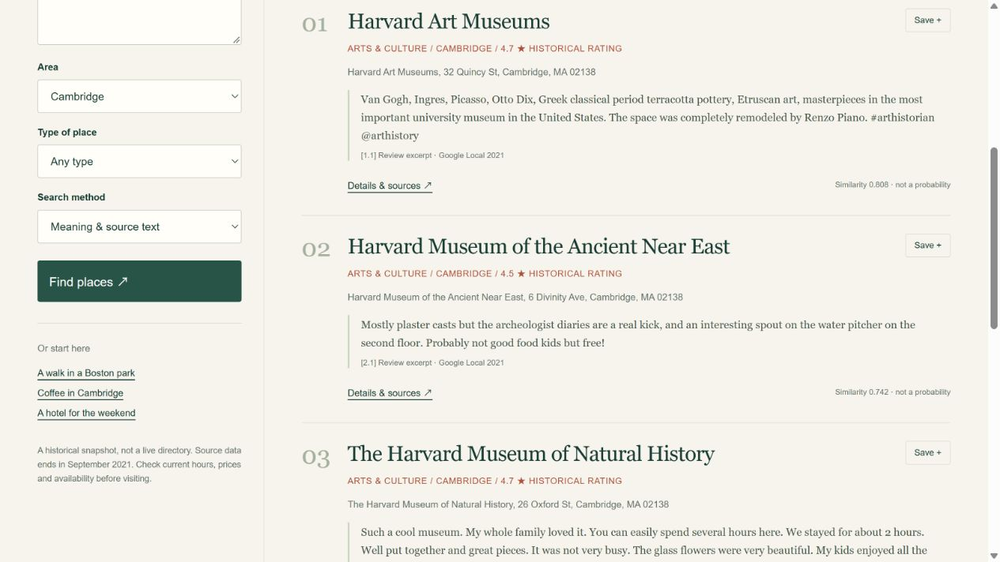

GREATER BOSTON / AC215 · MILESTONE 2
A good place
to start.
Find places in Boston, Cambridge and Somerville.
See the source
behind each suggestion.
Live search runs while the demo computer is online.
This page
and the materials stay available when it is offline.

500 places
3,000 sampled reviews
3,976 indexed passages
Historical source data
through September 2021
A LOOK INSIDE
Same question. Two ways to search.
These are saved results from the real API.
For a new question,
open live search above.
Recorded results; no new model computation runs on this page.
FOR TEAMMATES, TFs & CURIOUS VISITORS
The project,
ready to share.
A reproducible retrieval pipeline with a working frontend, source citations and a simple baseline. Python uses uv; processing, embedding, serving and tests run in Docker.
Browse the repository ↗WHAT THIS DEMO DOES
Query → retrieved passages → places with sources.